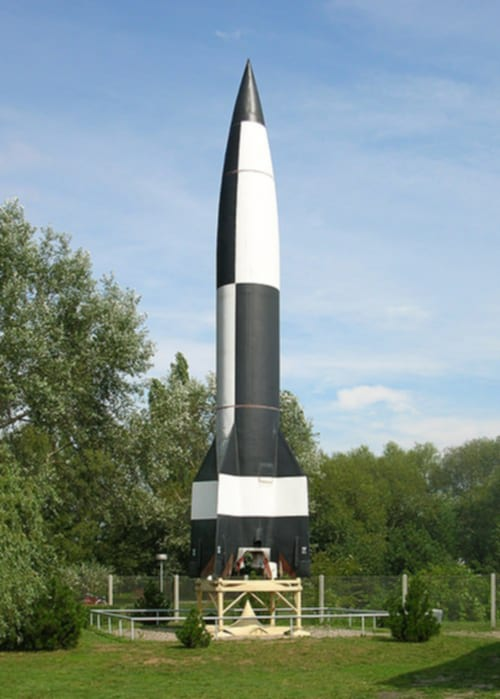
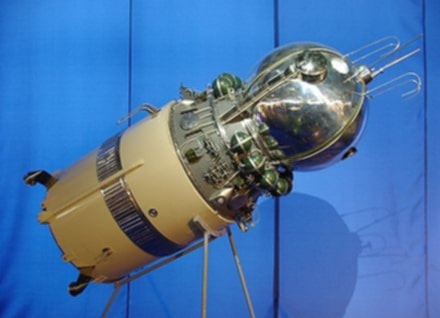
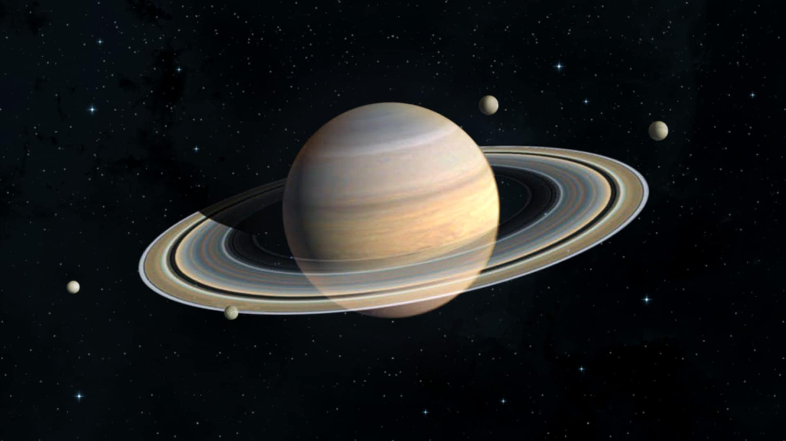

History of Space Exploration
First Telescopes

The first telescope is said to have been invented in 1608 in the Netherlands by an eyeglass maker named Hans Lippershey, but their first recorded use in astronomy was by Galileo Galilei in 1609. In 1668 Isaac Newton built his own reflecting telescope, the first fully functional telescope of this kind, and a landmark for future developments due to its superior features over the previous Galilean telescope.
A string of discoveries in the Solar System (and beyond) followed, then and in the next centuries: the mountains of the Moon, the phases of Venus, the main satellites of Jupiter and Saturn, the rings of Saturn, many comets, the asteroids, the new planets Uranus and Neptune, and many more satellites.
The Orbiting Astronomical Observatory 2 was the first space telescope launched 1968, but the launching of Hubble Space Telescope in 1990 set a milestone. As of 1 December 2022, there were 5,284 confirmed exoplanets discovered. The Milky Way is estimated to contain 100–400 billion stars and more than 100 billion planets. There are at least 2 trillion galaxies in the observable universe. HD1 is the most distant known object from Earth, reported as 33.4 billion light-years away.
First Outer Space Flights
Model of Vostok spacecraft

Model of Vostok spacecraft
MW 18014 was a German V-2 rocket test launch that took place on 20 June 1944, at the Peenemünde Army Research Center in Peenemünde. It was the first human-made object to reach outer space, attaining an apogee of 176 kilometers, which is well above the Kármán line. It was a vertical test launch. Although the rocket reached space, it did not reach orbital velocity, and therefore returned to Earth in an impact, becoming the first sub-orbital spaceflight. In 1949, the Bumper-WAC reached an altitude of 393 kilometres (244 mi), becoming the first human-made object to enter space, according to NASA.
First Object in Orbit
The first successful orbital launch was of the Soviet uncrewed Sputnik 1 ("Satellite 1") mission on 4 October 1957. The satellite weighed about 83 kg (183 lb), and is believed to have orbited Earth at a height of about 250 km (160 mi). It had two radio transmitters (20 and 40 MHz), which emitted "beeps" that could be heard by radios around the globe. Analysis of the radio signals was used to gather information about the electron density of the ionosphere, while temperature and pressure data was encoded in the duration of radio beeps. The results indicated that the satellite was not punctured by a meteoroid. Sputnik 1 was launched by an R-7 rocket. It burned up upon re-entry on 3 January 1958.
First Human Outer Space Flight
Vostok 1 (Russian: Восток, lit. 'East' or 'Orient') was the first spaceflight of the Vostok programme and the first human orbital spaceflight in history. The Vostok 3KA space capsule was launched from Baikonur Cosmodrome on 12 April 1961, with Soviet cosmonaut Yuri Gagarin aboard, making him the first human to reach orbital velocity around the Earth and to complete a full orbit around the Earth.
Yuri Alekseyevich Gagarin
Yuri Alekseyevich Gagarin (9 March 1934 – 27 March 1968) was a Soviet pilot and cosmonaut who, aboard the first successful crewed spaceflight, became the first person to journey into outer space. Travelling on Vostok 1, Gagarin completed one orbit of Earth on 12 April 1961, with his flight taking 108 minutes. By achieving this major milestone for the Soviet Union amidst the Space Race, he became an international celebrity and was awarded many medals and titles, including his nation's highest distinction: Hero of the Soviet Union.
First Astronomical Body Space Explorations
Luna 2 (Russian: Луна 2), originally named the Second Soviet Cosmic Rocket and nicknamed Lunik 2 in contemporaneous media, was the sixth of the Soviet Union's Luna programme spacecraft launched to the Moon, E-1 No.7. It was the first spacecraft to reach the surface of the Moon, and the first human-made object to make contact with another celestial body.
The first artificial object to reach another celestial body was Luna 2 reaching the Moon in 1959. The first soft landing on another celestial body was performed by Luna 9 landing on the Moon on 3 February 1966. Luna 10 became the first artificial satellite of the Moon, entering in a lunar orbit on 3 April 1966.
The first crewed landing on another celestial body was performed by Apollo 11 on 20 July 1969, landing on the Moon. There have been a total of six spacecraft with humans landing on the Moon starting from 1969 to the last human landing in 1972.
The first interplanetary flyby was the 1961 Venera 1 flyby of Venus, though the 1962 Mariner 2 was the first flyby of Venus to return data (closest approach 34,773 kilometers). Pioneer 6 was the first satellite to orbit the Sun, launched on 16 December 1965. The other planets were first flown by in 1965 for Mars by Mariner 4, 1973 for Jupiter by Pioneer 10, 1974 for Mercury by Mariner 10, 1979 for Saturn by Pioneer 11, 1986 for Uranus by Voyager 2, 1989 for Neptune by Voyager 2. In 2015, the dwarf planets Ceres and Pluto were orbited by Dawn and passed by New Horizons, respectively. This accounts for flybys of each of the eight planets in the Solar System, the Sun, the Moon, and Ceres and Pluto (two of the five recognized dwarf planets).
The first interplanetary surface mission to return at least limited surface data from another planet was the 1970 landing of Venera 7, which returned data to Earth for 23 minutes from Venus. In 1975, Venera 9 was the first to return images from the surface of another planet, returning images from Venus. In 1971, the Mars 3 mission achieved the first soft landing on Mars returning data for almost 20 seconds. Later, much longer duration surface missions were achieved, including over six years of Mars surface operation by Viking 1 from 1975 to 1982 and over two hours of transmission from the surface of Venus by Venera 13 in 1982, the longest ever Soviet planetary surface mission. Venus and Mars are the two planets outside of Earth on which humans have conducted surface missions with uncrewed robotic spacecraft.
First Space Station
Salyut 1 (Russian: Салют-1, lit. 'Salute 1'), also known as DOS-1 (Durable Orbital Station 1), was the world's first space station. It was launched into low Earth orbit by the Soviet Union on April 19, 1971. The Salyut program subsequently achieved five more successful launches of seven additional stations. The program's final module, Zvezda (DOS-8), became the core of the Russian Orbital Segment of the International Space Station and remains in orbit today.
Salyut 1 was the first space station of any kind, launched into low Earth orbit by the Soviet Union on 19 April 1971. The International Space Station (ISS) is currently the largest and oldest of the 2 current fully functional space stations, inhabited continuously since the year 2000. The other, Tiangong space station built by China, is now fully crewed and operational.
First Interstellar Space flight
Voyager 1 became the first human-made object to leave the Solar System into interstellar space on 25 August 2012. The probe passed the heliopause at 121 AU to enter interstellar space.
Farthest From Earth
The Apollo 13 flight passed the far side of the Moon at an altitude of 254 kilometers (158 miles; 137 nautical miles) above the lunar surface, and 400,171 km (248,655 mi) from Earth, marking the record for the farthest humans have ever traveled from Earth in 1970. As of 9 February 2025 Voyager 1 was at a distance of 166.4 AU (24.89 billion km; 15.47 billion mi) from Earth. It is the most distant human-made object from Earth.
Apollo 13 (April 11–17, 1970) was the seventh crewed mission in the Apollo space program and would have been the third Moon landing. The craft was launched from Kennedy Space Center on April 11, 1970, but the landing was aborted after an oxygen tank in the service module (SM) exploded two days into the mission, disabling its electrical and life-support system. The crew, supported by backup systems on the lunar module (LM), instead looped around the Moon in a circumlunar trajectory and returned safely to Earth on April 17. The mission was commanded by Jim Lovell, with Jack Swigert as command module (CM) pilot and Fred Haise as Lunar Module (LM) pilot. Swigert was a late replacement for Ken Mattingly, who was grounded after exposure to rubella.
Targets of Space Exploration
Starting in the mid-20th century probes and then human missions were sent into Earth orbit, and then on to the Moon. Also, probes were sent throughout the known Solar System, and into Solar orbit. Uncrewed spacecraft have been sent into orbit around Saturn, Jupiter, Mars, Venus, and Mercury by the 21st century, and the most distance active spacecraft, Voyager 1 and 2 traveled beyond 100 times the Earth-Sun distance. The instruments were enough though that it is thought they have left the Sun's heliosphere, a sort of bubble of particles made in the Galaxy by the Sun's solar wind.
The Sun
The Sun is a major focus of space exploration. Being above the atmosphere in particular and Earth's magnetic field gives access to the solar wind and infrared and ultraviolet radiations that cannot reach Earth's surface. The Sun generates most space weather, which can affect power generation and transmission systems on Earth and interfere with, and even damage, satellites and space probes. Numerous spacecraft dedicated to observing the Sun, beginning with the Apollo Telescope Mount, have been launched and still others have had solar observation as a secondary objective. Parker Solar Probe, launched in 2018, will approach the Sun to within 1/9th the orbit of Mercury.
Mercury
A MESSENGER image from 18,000 km showing a region about 500 km across (2008)
Mercury remains the least explored of the Terrestrial planets. As of May 2013, the Mariner 10 and MESSENGER missions have been the only missions that have made close observations of Mercury. MESSENGER entered orbit around Mercury in March 2011, to further investigate the observations made by Mariner 10 in 1975 (Munsell, 2006b). A third mission to Mercury, scheduled to arrive in 2025, BepiColombo is to include two probes. BepiColombo is a joint mission between Japan and the European Space Agency. MESSENGER and BepiColombo are intended to gather complementary data to help scientists understand many of the mysteries discovered by Mariner 10's flybys.
Flights to other planets within the Solar System are accomplished at a cost in energy, which is described by the net change in velocity of the spacecraft, or delta-v. Due to the relatively high delta-v to reach Mercury and its proximity to the Sun, it is difficult to explore and orbits around it are rather unstable.
Venus
Main article: Observations and explorations of Venus
Venus was the first target of interplanetary flyby and lander missions and, despite one of the most hostile surface environments in the Solar System, has had more landers sent to it (nearly all from the Soviet Union) than any other planet in the Solar System. The first flyby was the 1961 Venera 1, though the 1962 Mariner 2 was the first flyby to successfully return data. Mariner 2 has been followed by several other flybys by multiple space agencies often as part of missions using a Venus flyby to provide a gravitational assist en route to other celestial bodies. In 1967, Venera 4 became the first probe to enter and directly examine the atmosphere of Venus. In 1970, Venera 7 became the first successful lander to reach the surface of Venus and by 1985 it had been followed by eight additional successful Soviet Venus landers which provided images and other direct surface data. Starting in 1975, with the Soviet orbiter Venera 9, some ten successful orbiter missions have been sent to Venus, including later missions which were able to map the surface of Venus using radar to pierce the obscuring atmosphere.
Earth
Main article: Earth observation satellite
First television image of Earth from space, taken by TIROS-1 (1960)
Space exploration has been used as a tool to understand Earth as a celestial object. Orbital missions can provide data for Earth that can be difficult or impossible to obtain from a purely ground-based point of reference.
For example, the existence of the Van Allen radiation belts was unknown until their discovery by the United States' first artificial satellite, Explorer 1. These belts contain radiation trapped by Earth's magnetic fields, which currently renders construction of habitable space stations above 1000 km impractical. Following this early unexpected discovery, a large number of Earth observation satellites have been deployed specifically to explore Earth from a space-based perspective. These satellites have significantly contributed to the understanding of a variety of Earth-based phenomena. For instance, the hole in the ozone layer was found by an artificial satellite that was exploring Earth's atmosphere, and satellites have allowed for the discovery of archeological sites or geological formations that were difficult or impossible to otherwise identify.
Moon
Main article: Earth observation satellite
Apollo 16 LEM Orion, the Lunar Roving Vehicle and astronaut John Young (1972)
The Moon was the first celestial body to be the object of space exploration. It holds the distinctions of being the first remote celestial object to be flown by, orbited, and landed upon by spacecraft, and the only remote celestial object ever to be visited by humans.
In 1959, the Soviets obtained the first images of the far side of the Moon, never previously visible to humans. The U.S. exploration of the Moon began with the Ranger 4 impactor in 1962. Starting in 1966, the Soviets successfully deployed a number of landers to the Moon which were able to obtain data directly from the Moon's surface; just four months later, Surveyor 1 marked the debut of a successful series of U.S. landers. The Soviet uncrewed missions culminated in the Lunokhod program in the early 1970s, which included the first uncrewed rovers and also successfully brought lunar soil samples to Earth for study. This marked the first (and to date the only) automated return of extraterrestrial soil samples to Earth. Uncrewed exploration of the Moon continues with various nations periodically deploying lunar orbiters. China's Chang'e 4 in 2019 and Chang'e 6 in 2024 achieved the world's first landing and sample return on the far side of the Moon. India's Chandrayaan-3 in 2023 achieved the world's first landing on the lunar south pole region.
Crewed exploration of the Moon began in 1968 with the Apollo 8 mission that successfully orbited the Moon, the first time any extraterrestrial object was orbited by humans. In 1969, the Apollo 11 mission marked the first time humans set foot upon another world. Crewed exploration of the Moon did not continue for long. The Apollo 17 mission in 1972 marked the sixth landing and the most recent human visit. Artemis II is scheduled to complete a crewed flyby of the Moon in 2025, and Artemis III will perform the first lunar landing since Apollo 17 with it scheduled for launch no earlier than 2026. Robotic missions are still pursued vigorously.
Mars
Main article: Exploration of Mars

Surface of Mars by the Spirit rover (2004)
The exploration of Mars has been an important part of the space exploration programs of the Soviet Union (later Russia), the United States, Europe, Japan and India. Dozens of robotic spacecraft, including orbiters, landers, and rovers, have been launched toward Mars since the 1960s. These missions were aimed at gathering data about current conditions and answering questions about the history of Mars. The questions raised by the scientific community are expected to not only give a better appreciation of the Red Planet but also yield further insight into the past, and possible future, of Earth.
The exploration of Mars has come at a considerable financial cost with roughly two-thirds of all spacecraft destined for Mars failing before completing their missions, with some failing before they even began. Such a high failure rate can be attributed to the complexity and large number of variables involved in an interplanetary journey, and has led researchers to jokingly speak of The Great Galactic Ghoul which subsists on a diet of Mars probes. This phenomenon is also informally known as the "Mars Curse". In contrast to overall high failure rates in the exploration of Mars, India has become the first country to achieve success of its maiden attempt. India's Mars Orbiter Mission (MOM) is one of the least expensive interplanetary missions ever undertaken with an approximate total cost of ₹ 450 Crore (US$73 million). The first mission to Mars by any Arab country has been taken up by the United Arab Emirates. Called the Emirates Mars Mission, it was launched on 19 July 2020 and went into orbit around Mars on 9 February 2021. The uncrewed exploratory probe was named "Hope Probe" and was sent to Mars to study its atmosphere in detail.
Phobos
Main article: Exploration of Phobos
The Russian space mission Fobos-Grunt, which launched on 9 November 2011, experienced a failure leaving it stranded in low Earth orbit. It was to begin exploration of the Phobos and Martian circumterrestrial orbit, and study whether the moons of Mars, or at least Phobos, could be a "trans-shipment point" for spaceships traveling to Mars.
Asteroids
Main article: Exploration of the asteroids
Asteroid 4 Vesta, imaged by the Dawn spacecraft (2011)
Until the advent of space travel, objects in the asteroid belt were merely pinpricks of light in even the largest telescopes, their shapes and terrain remaining a mystery. Several asteroids have now been visited by probes, the first of which was Galileo, which flew past two: 951 Gaspra in 1991, followed by 243 Ida in 1993. Both of these lay near enough to Galileo's planned trajectory to Jupiter that they could be visited at acceptable cost. The first landing on an asteroid was performed by the NEAR Shoemaker probe in 2000, following an orbital survey of the object, 433 Eros. The dwarf planet Ceres and the asteroid 4 Vesta, two of the three largest asteroids, were visited by NASA's Dawn spacecraft, launched in 2007.
Hayabusa was a robotic spacecraft developed by the Japan Aerospace Exploration Agency to return a sample of material from the small near-Earth asteroid 25143 Itokawa to Earth for further analysis. Hayabusa was launched on 9 May 2003 and rendezvoused with Itokawa in mid-September 2005. After arriving at Itokawa, Hayabusa studied the asteroid's shape, spin, topography, color, composition, density, and history. In November 2005, it landed on the asteroid twice to collect samples. The spacecraft returned to Earth on 13 June 2010.
Jupiter
Main article: Exploration of Jupiter
Tupan Patera on Jupiter's moon Io
The exploration of Jupiter has consisted solely of a number of automated NASA spacecraft visiting the planet since 1973. A large majority of the missions have been "flybys", in which detailed observations are taken without the probe landing or entering orbit; such as in Pioneer and Voyager programs. The Galileo and Juno spacecraft are the only spacecraft to have entered the planet's orbit. As Jupiter is believed to have only a relatively small rocky core and no real solid surface, a landing mission is precluded.
Reaching Jupiter from Earth requires a delta-v of 9.2 km/s, which is comparable to the 9.7 km/s delta-v needed to reach low Earth orbit. Fortunately, gravity assists through planetary flybys can be used to reduce the energy required at launch to reach Jupiter, albeit at the cost of a significantly longer flight duration.
Jupiter has 95 known moons, many of which have relatively little known information about them.
Saturn
Main article: Exploration of Saturn

Saturn has been explored only through uncrewed spacecraft launched by NASA, including one mission (Cassini–Huygens) planned and executed in cooperation with other space agencies. These missions consist of flybys in 1979 by Pioneer 11, in 1980 by Voyager 1, in 1982 by Voyager 2 and an orbital mission by the Cassini spacecraft which starting in the mid-20th century probes and then human missions were sent into Earth orbit, and then on to the Moon. Also, probes were sent throughout the known Solar System, and into Solar orbit. Uncrewed spacecraft have been sent into orbit around Saturn, Jupiter, Mars, Venus, and Mercury by the 21st century, and the most distance active spacecraft, Voyager 1 and 2 traveled beyond 100 times the Earth-Sun distance. The instruments were enough though that it is thought they have left the Sun's heliosphere, a sort of bubble of particles made in the Galaxy by the Sun's solar wind.
Uranus
Main article: Exploration of Uranus
The exploration of Uranus has been entirely through the Voyager 2 spacecraft, with no other visits currently planned. Given its axial tilt of 97.77°, with its polar regions exposed to sunlight or darkness for long periods, scientists were not sure what to expect at Uranus. The closest approach to Uranus occurred on 24 January 1986. Voyager 2 studied the planet's unique atmosphere and magnetosphere. Voyager 2 also examined its ring system and the moons of Uranus including all five of the previously known moons, while discovering an additional ten previously unknown moons.
Images of Uranus proved to have a uniform appearance, with no evidence of the dramatic storms or atmospheric banding evident on Jupiter and Saturn. Great effort was required to even identify a few clouds in the images of the planet. The magnetosphere of Uranus, however, proved to be unique, being profoundly affected by the planet's unusual axial tilt. In contrast to the bland appearance of Uranus itself, striking images were obtained of the Moons of Uranus, including evidence that Miranda had been unusually geologically active.
Neptune
Main article: Exploration of Neptune
The exploration of Neptune began with the 25 August 1989 Voyager 2 flyby, the sole visit to the system as of 2025. The possibility of a Neptune Orbiter has been discussed, but no other missions have been given serious thought.
Although the extremely uniform appearance of Uranus during Voyager 2's visit in 1986 had led to expectations that Neptune would also have few visible atmospheric phenomena, the spacecraft found that Neptune had obvious banding, visible clouds, auroras, and even a conspicuous anticyclone storm system rivaled in size only by Jupiter's Great Red Spot. Neptune also proved to have the fastest winds of any planet in the Solar System, measured as high as 2,100 km/h. Voyager 2 also examined Neptune's ring and moon system. It discovered 900 complete rings and additional partial ring "arcs" around Neptune. In addition to examining Neptune's three previously known moons, Voyager 2 also discovered five previously unknown moons, one of which, Proteus, proved to be the last largest moon in the system. Data from Voyager 2 supported the view that Neptune's largest moon, Triton, is a captured Kuiper belt object.
Pluto
Main article: Pluto § Exploration
The dwarf planet Pluto presents significant challenges for spacecraft because of its great distance from Earth (requiring high velocity for reasonable trip times) and small mass (making capture into orbit difficult at present). Voyager 1 could have visited Pluto, but controllers opted instead for a close flyby of Saturn's moon Titan, resulting in a trajectory incompatible with a Pluto flyby. Voyager 2 never had a plausible trajectory for reaching Pluto.
After an intense political battle, a mission to Pluto dubbed New Horizons was granted funding from the United States government in 2003. New Horizons was launched successfully on 19 January 2006. In early 2007 the craft made use of a gravity assist from Jupiter. Its closest approach to Pluto was on 14 July 2015; scientific observations of Pluto began five months prior to closest approach and continued for 16 days after the encounter.
Kuiper Belt Objects
Main article: Pluto § Exploration
The New Horizons mission also performed a flyby of the small planetesimal Arrokoth, in the Kuiper belt, in 2019. This was its first extended mission.
Comets
Main article: List of missions to comets
TComet 103P/Hartley (2010)
Although many comets have been studied from Earth sometimes with centuries-worth of observations, only a few comets have been closely visited. In 1985, the International Cometary Explorer conducted the first comet fly-by (21P/Giacobini-Zinner) before joining the Halley Armada studying the famous comet. The Deep Impact probe smashed into 9P/Tempel to learn more about its structure and composition and the Stardust mission returned samples of another comet's tail. The Philae lander successfully landed on Comet Churyumov–Gerasimenko in 2014 as part of the broader Rosetta mission.
Deep space exploration
Main article: Deep space exploration
This high-resolution image of the Hubble Ultra Deep Field includes galaxies of various ages, sizes, shapes, and colors. The smallest, reddest galaxies, are some of the most distant galaxies to have been imaged by an optical telescope.
Deep space exploration is the branch of astronomy, astronautics and space technology that is involved with the exploration of distant regions of outer space. Physical exploration of space is conducted both by human spaceflights (deep-space astronautics) and by robotic spacecraft.
Some of the best candidates for future deep space engine technologies include anti-matter, nuclear power and beamed propulsion. Beamed propulsion, appears to be the best candidate for deep space exploration presently available, since it uses known physics and known technology that is being developed for other purposes.